El Módulo del Ambiente Estudiante ofrece la posibilidad de realizar diferentes consultas sobre sus datos personales, el valor de la liquidación de su semestre académico, detalle de las asignaturas matriculadas con sus respectivos grupos, horarios y docentes asignados, resumen de calificaciones tanto del periodo vigente como las notas históricas, deudas actuales, demanda de asignaturas de cada periodo académico, certificados de estímulos, información del pensum y horario actual.
De igual forma el alumno puede ejecutar los diferentes procesos de matrícula académica, inclusiones y cancelaciones de materias, inscribir el proyecto de grado, participar en actividades de tutorías, realizar validaciones, realizar pagos de liquidación en línea.
El alumno ingresa a esta funcionalidad en la cual el sistema despliega nuevas funciones propias de la información personal tal como: datos familiares, información académica, estudios realizados, experiencia laboral, referencias, asociaciones, sanciones, deudas, estímulos y datos de admisión.
Esta funcionalidad le permite al estudiante consultar sus datos personales, si no aparece su foto, puede actualizarla haciéndola llegar a la dependencia encargada para que sea subida al sistema en el módulo que está en la siguiente ruta: Académico/ Registro Académico / Hoja de vida estudiante / Datos personales. Al dar clic sobre la opción Modificar podrá visualizar toda la información y cambiarla si considera necesario.
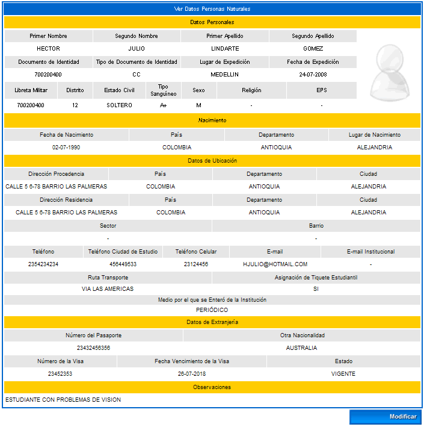
En la siguiente interfaz se muestra un ejemplo en el cual el estudiante puede cambiar la información de los siguientes datos: personales, nacimiento, dirección de ubicación y datos de extranjería. Una vez finalizada la actualización de los datos, el alumno debe dar clic sobre la opción Registrar. El sistema solicita confirmación de la actualización, si la respuesta es afirmativa se emitirá un mensaje indicando el éxito del proceso.
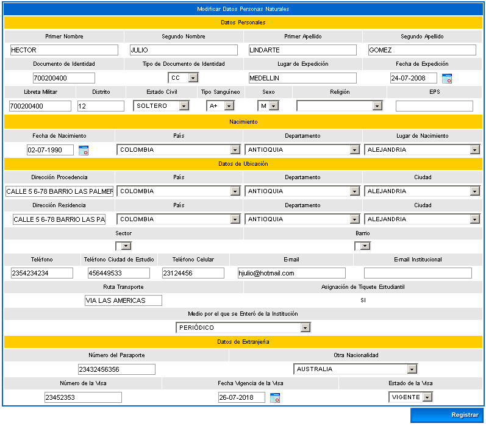
En esta funcionalidad el estudiante puede gestionar la información de las personas que conforman el núcleo familiar. Dispone de las opciones: Ver, Agregar, Modificar y Eliminar.
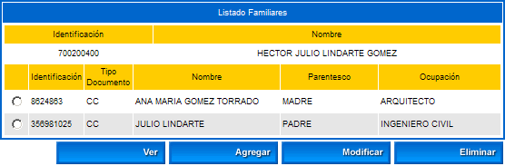
Opción Ver: Esta opción previsualiza los datos familiares que ha gestionado el estudiante.
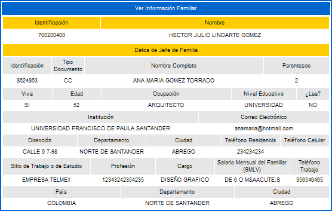
Opción Agregar: Esta opción le ofrece al alumno la posibilidad de gestionar la información de los familiares, bien sea que estén vivos o no, además se puede asociar información académica, laboral y lugar de ubicación. El sistema dispone de dos botones para agregar y eliminar los datos, una vez esté seguro de que la información diligenciada es la correcta deberá dar clic sobre la opción Registrar. El sistema solicita confirmación de la adición, si la respuesta es afirmativa se emitirá un mensaje indicando el éxito del proceso.
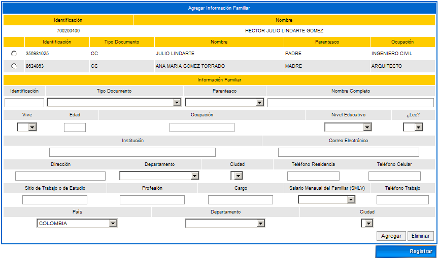
Opción Modificar: Esta opción le ofrece al alumno la posibilidad de cambiar la información de los familiares, información académica, laboral y lugar de ubicación. Una vez esté seguro de que la información modificada es la correcta deberá dar clic sobre la opción Registrar. El sistema solicita confirmación de la actualización, si la respuesta es afirmativa se emitirá un mensaje indicando el éxito del proceso.
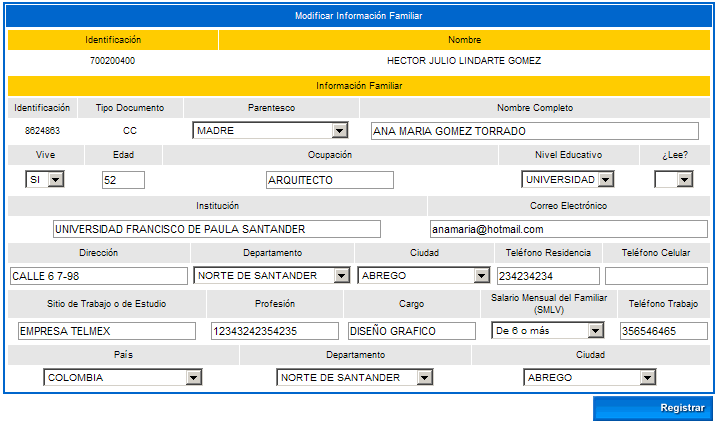
Opción Eliminar: Esta opción le permite al estudiante borrar un registro ya creado. El sistema solicita confirmación del borrado del registro, si la respuesta es afirmativa se emitirá un mensaje indicando el éxito del proceso.
En esta funcionalidad el estudiante puede gestionar la información de las personas que figuran como jefes del núcleo familiar. Dispone de las opciones: Ver, Agregar, Modificar y Eliminar.
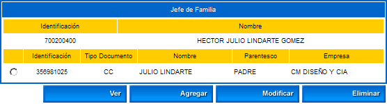
Opción Ver: Esta opción previsualiza los datos del jefe de Familia que ha gestionado el estudiante.
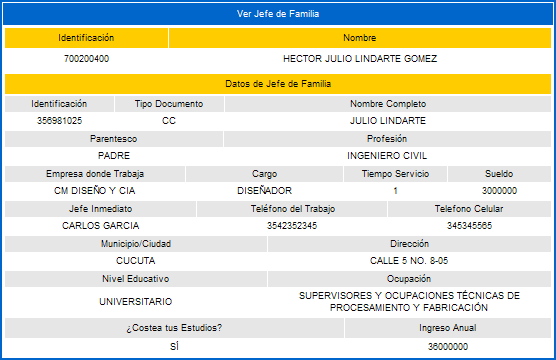
Opción Agregar: Esta opción le ofrece al alumno la posibilidad de gestionar la información de uno o varios jefes dentro del núcleo familiar, además se puede asociar información académica, laboral y lugar de ubicación. El sistema dispone de dos botones para agregar y eliminar los datos, una vez esté seguro de que la información diligenciada es la correcta deberá dar clic sobre la opción Registrar. El sistema solicita confirmación de la adición, si la respuesta es afirmativa se emitirá un mensaje indicando el éxito del proceso.
Se aclara que el campo "Ocupación" muestra un listado de ocupaciones que ya deben estar debidamente gestionadas en la funcionalidad: Admisiones / Inscripciones / Tablas básicas.
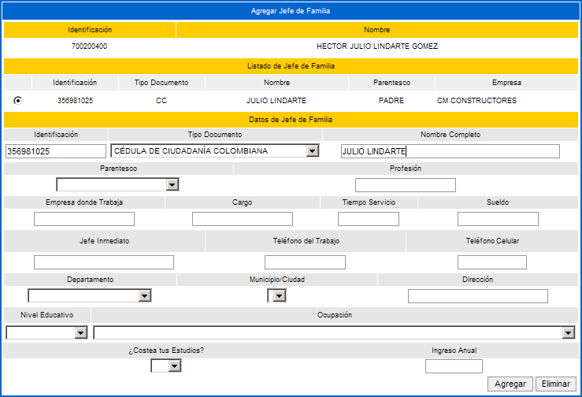
Opción Modificar: Esta opción le ofrece al alumno la posibilidad de cambiar la información de los jefes de familia registrados, la información académica, laboral, lugar de ubicación y ocupación actual. Una vez esté seguro de que la información modificada es la correcta deberá dar clic sobre la opción Registrar. El sistema solicita confirmación de la actualización, si la respuesta es afirmativa se emitirá un mensaje indicando el éxito del proceso.
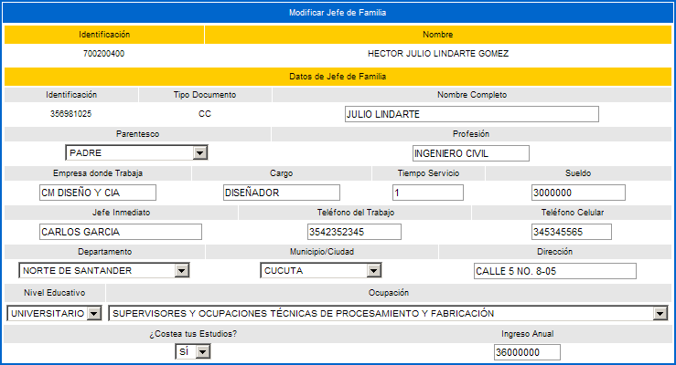
Opción Eliminar: Esta opción le permite al estudiante borrar un registro ya creado. El sistema solicita confirmación del borrado del registro, si la respuesta es afirmativa se emitirá un mensaje indicando el éxito del proceso.
En esta funcionalidad el estudiante puede asociar los idiomas que maneje y los respectivos niveles de aprendizaje que tiene sobre éstos. Dispone de las opciones de Agregar, Modificar y Eliminar.
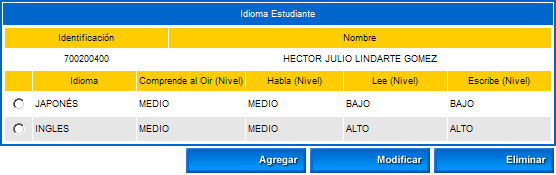
Opción Agregar: Esta funcionalidad permite al estudiante asociar un idioma de los que se muestran en el combo con una de las habilidades en cuanto a lectura, escritura, y comprensión del mismo se refiere. Una vez ha elegido el idioma de su interés deberá dar clic sobre la opción Registrar. El sistema solicita confirmación de la adición, si la respuesta es afirmativa se emitirá un mensaje indicando el éxito del proceso.
Tener en cuenta que la lista de los idiomas se carga siempre y cuando ya estén gestionados en la funcionalidad para el rol administrador del aplicativo Académico en: Tablas Generales / Idiomas.
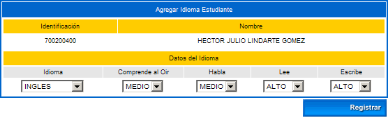
Opción Modificar: Esta funcionalidad permite al estudiante cambiar los datos asociados al idioma almacenado. Una vez ha elegido el idioma de su interés deberá dar clic sobre la opción Registrar. El sistema solicita confirmación de la actualización, si la respuesta es afirmativa se emitirá un mensaje indicando el éxito del proceso.
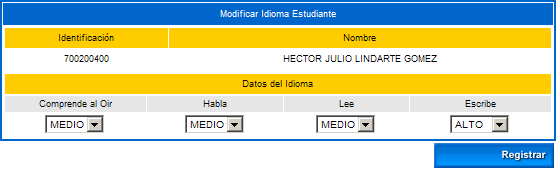
Opción Eliminar: Esta opción le permite al estudiante borrar un registro ya creado. El sistema solicita confirmación del borrado del registro, si la respuesta es afirmativa se emitirá un mensaje indicando el éxito del proceso.
En esta funcionalidad el estudiante puede asociar los pasatiempos que practica. Dispone de las opciones: Agregar, Modificar y Eliminar.
Tener en cuenta que la lista de pasatiempos se carga siempre y cuando ya estén gestionados en la funcionalidad para el rol administrador del aplicativo Académico en: Tablas Generales / Pasatiempos.
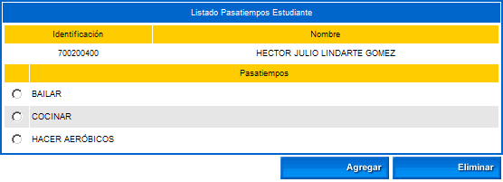
Opción Agregar: Esta funcionalidad permite al estudiante asociar un pasatiempo de los que se muestran en el combo. Una vez ha elegido el pasatiempo de su interés deberá dar clic sobre la opción Registrar. El sistema solicita confirmación de la adición, si la respuesta es afirmativa se emitirá un mensaje indicando el éxito del proceso.
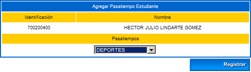
Opción Eliminar: Esta opción le permite al estudiante borrar un registro ya creado. El sistema solicita confirmación del borrado del registro, si la respuesta es afirmativa se emitirá un mensaje indicando el éxito del proceso.
Esta funcionalidad permite que el estudiante consulte la información de las instituciones en donde realizó sus estudios secundarios y los resultados de las pruebas ICFES. Se aclara que solo se listarán como resultados de las pruebas ICFES las que fueron presentadas antes del año 2000.
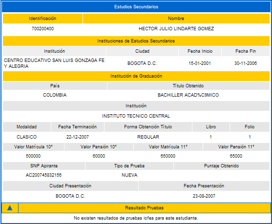
Esta funcionalidad permite que el estudiante consulte la información de los estudios universitarios que ha desarrollado en el trayecto de su vida académica.
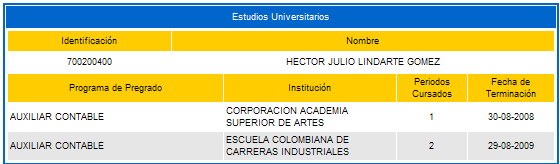
Esta funcionalidad permite que el estudiante consulte la información de los estudios de postgrado que ha culminado satisfactoriamente.
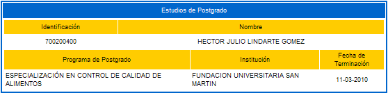